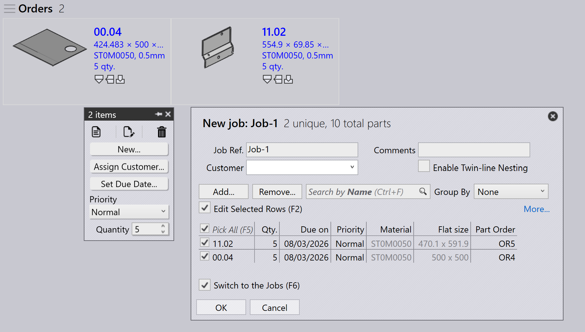

Megrendelések
A megrendelés meghatározza, hogy mely alkatrészeket kell legyártani, milyen mennyiségben és mikorra. Ez vezérli a gyártástervezést és -végrehajtást a TruSmartCAM rendszerben. A megrendelések különböző módszerekkel hozhatók létre vagy importálhatók, és feladatokká alakíthatók a gyártástervezéshez.
Megrendelés panel

|
|
Megrendelések szerkesztése
Jelöljön ki egy vagy több megrendelést, és kattintson a jobb gombbal a gyakori megrendelésadatok, például a mennyiség, az esedékesség napja, a prioritás és az ügyféladatok módosításához.
Ha a kijelölt megrendelések eltérő értékeket igényelnek, használja a Check-out for Editing lehetőséget az egyes megrendelések követelmény szerinti egyenkénti szerkesztéséhez.

A megrendeléseken végzett módosítások azonnal érvénybe lépnek az adatbázisban. Használja a Delete parancsot a megrendelések eltávolításához a megrendelés-könyvtárból.
| A Delete parancs csak a megrendeléseket távolítja el. Az adott megrendelésekhez kapcsolt alkatrészek nem törlődnek az alkatrész-könyvtárból. |
Megrendelések tervezése
Jelöljön ki egy vagy több megrendelést, kattintson a jobb gombbal, majd kattintson a New… → Job elemre a kijelölt megrendelések feladatokká alakításához. Használja a Rendezés és Szűrés lehetőségeket a releváns megrendelések csoportosításához a feladat létrehozása előtt.

Miután a megrendelések feladattá alakultak:
-
A feladat átkerül a Feladatok oldalra
-
A megrendelések eltűnnek a Megrendelések listából
-
Ezután a szokásos feladattervezési munkafolyamat használható a gyártástervezéshez és a táblásításhoz
A feladattervezési munkafolyamatról további információért lásd: Auto Plan
További információk
-
Ha egy megrendeléseket tartalmazó feladatot törölnek, a kapcsolódó megrendelések automatikusan visszakerülnek a Megrendelések Kész oldalra, kivéve, ha a feladat vagy az alkatrész Kész jelölést kapott.
-
A megrendelések hozzáadhatók egy meglévő feladathoz vagy eltávolíthatók abból az Edit Job ablakon keresztül a gyártási követelmények alapján.